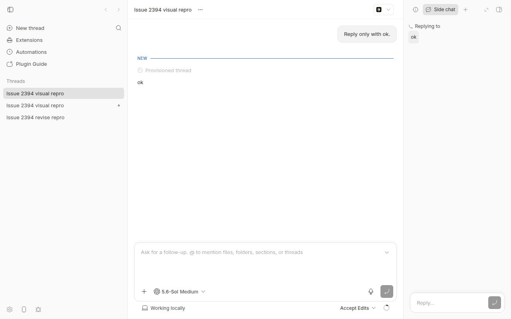
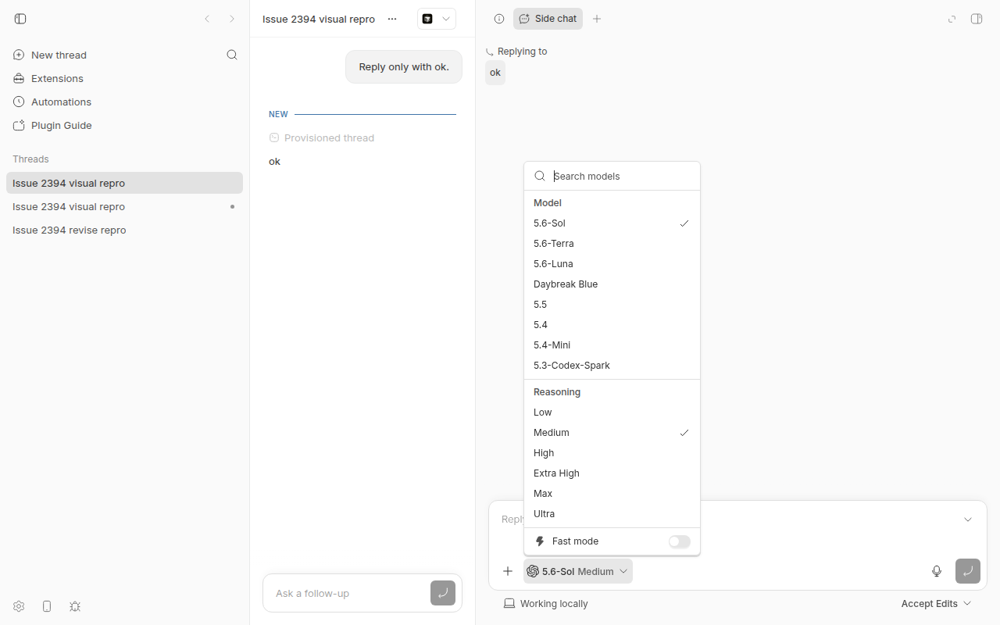

#2394 · Narrow side-chat composer collapses when opening the model picker
Verdict: REPRODUCED · Root-cause confidence: high
1. TL;DR
The bug exists at the stated base commit. A 270 px side panel collapsed before a model-trigger pointer release.
The collapse removed the visible trigger, so the browser did not send its click. The picker stayed closed.
A 672 px panel kept the trigger visible. The same 100 ms press opened the picker.
A desktop popover handler blurs the editor too early. The composer then treats that blur as an outside focus change.
2. Claims vs findings
| Claim from the issue | Status | Evidence |
|---|---|---|
| A narrow side-chat composer collapses when the user selects the model control. | Verified | At 270 px, the composer changed from expanded to compact during a 100 ms pointer press. |
| The model picker does not open. | Verified | After pointer release, aria-expanded stayed false and the dialog count stayed zero. |
| The model picker works when the side panel is wide. | Verified | At 672 px, the same press produced aria-expanded="true" and one dialog. |
| The model picker is not generally broken. | Verified | A direct click opened it. The wide-panel pointer test also opened it. |
| The bug affects bb 0.39.0. | Unverified | The reproduction used bb 0.40.0. The later result does not prove behavior in bb 0.39.0. |
3. Environment
- bb commit:
ad79bbb5ec909524f8f281e62d860c588a86f332. - Desktop package version:
0.40.0. - OS: Ubuntu 26.04 LTS on Linux 7.0.0-30-generic.
- Node:
v24.18.0. ABI:137. pnpm:9.15.0. - Provider: Codex. CLI version:
0.150.1. - Browser viewport: 1280 × 800 CSS pixels.
- App:
http://localhost:14281. Server:http://localhost:22281. - Host daemon:
http://127.0.0.1:30281. - Data directory:
~/.bb-dev/bb-report-worktrees-bb-report-2394-revise-osehfs-29572e11731b.
The private-copy install and the full Turbo build both completed successfully.
4. Minimal reproduction
- Start the isolated app with
scripts/bb-dev-app current. - Load its CLI environment with
eval "$(scripts/bb-dev-app env)". - Create one thread with the commands below.
thread_json="$(node packages/scripts/dist/commands/run-cli.js thread spawn \ --project proj_personal \ --provider codex \ --permission-mode accept-edits \ --title "Issue 2394 visual repro" \ --prompt "Reply only with ok." \ --json)" export BB_REPORT_THREAD_ID="$(printf '%s\n' "$thread_json" | jq -r .id)" node packages/scripts/dist/commands/run-cli.js thread wait \ "$BB_REPORT_THREAD_ID" --timeout 180
- From the report
issuesdirectory, run the commands below.
export BB_REPORT_APP_URL="$(node -e 'const url = new URL(process.env.BB_SERVER_URL); url.port = String(Number(url.port) - 8000); process.stdout.write(url.origin)')"
doobie -b bb-report-2394-revise --headless -e \
"saveFile('issue-2394-config.json', JSON.stringify({ appUrl: '$BB_REPORT_APP_URL', threadId: '$BB_REPORT_THREAD_ID', assetDir: 'assets' }))"
doobie -b bb-report-2394-revise --headless -t 30 \
run 2394/repro/browser-repro.js | tee 2394/repro/browser-state.json
The script sets a 1280 × 800 viewport. It opens the thread and selects the last assistant side-chat action.
The script then tests a 270 px panel and a 672 px control. The app URL comes from this checkout.
App: http://localhost:14281 Thread thr_zzx6tfp3fs reached status idle. Expected: The model picker should open and the composer should stay expanded. Actual: The composer collapses back into the pill, so the model picker cannot be used. Observed after release at 270 px: triggerAriaExpanded = "false" composerExpanded = false dialogCount = 0 Control result after release at 672 px: triggerAriaExpanded = "true" composerExpanded = true dialogCount = 1


Repro files: instructions, browser script, and state log.
5. Root cause
The side-chat plugin uses the host compact thread composer. It keeps the model picker editable.
The side-chat panel selects variant="compact".
The desktop popover trigger blurs the active text editor during mousedown.
The trigger calls blurActiveKeyboardInputBeforeOverlayOpen() before the picker has an open state.
That helper calls activeElement.blur().
The follow-up composer receives the blur. It waits one frame, then checks for an open overlay trigger.
The overlay selector requires aria-expanded="true".
The focus-loss handler uses that selector before it collapses the composer.
During the held press, the trigger still has aria-expanded="false". The handler therefore collapses the composer.
The compact state depends on the interaction expansion state.
The narrow layout hides the trigger before pointer release. The browser then cannot complete the click.
The wide layout keeps the trigger visible after focus loss. Pointer release can complete the click there.
The current test checks only an overlay that is already open. It sets aria-expanded="true" before focus leaves.
The test does not cover the pointer-down to click interval.
No later commit changed the root-cause branches in these five files. The issue is not already fixed.
6. Proposed fix (first principles)
Do not blur the active editor in the desktop PopoverTrigger mousedown handler.
Let Radix manage desktop focus. Keep the explicit blur in the compact mobile trigger.
The mobile helper already states that it exists for compact drawers and mobile Safari.
Add a regression test with a held pointer press. Check that the narrow composer stays expanded until the picker opens.
A temporary desktop blur removal fixed the real 270 px browser test.
Before fix, after release: aria-expanded = "false", dialogCount = 0 After fix, after release: aria-expanded = "true", dialogCount = 1
The focused composer and overlay tests passed: 46 tests in two files.
See the temporary fix diff and test output.
Run the full app and shared UI suites before merge. Also check a compact mobile drawer in iOS Safari.
7. Related issues
No duplicate issue or linked open pull request was present.
PR #642 introduced the focus-driven compact composer.
PR #1356 added the shared responsive drawer performance work.
8. Appendix
Commands
gh issue view 2394 --comments
pnpm install --frozen-lockfile --prefer-offline --package-import-method=copy
pnpm exec turbo run build
scripts/bb-dev-app current
eval "$(scripts/bb-dev-app env)"
pnpm bb:dev thread spawn --project proj_personal --provider codex \
--permission-mode accept-edits --title "Issue 2394 visual repro" \
--prompt "Reply only with ok." --json
node packages/scripts/dist/commands/run-cli.js thread wait <thread-id> --timeout 180
doobie -b bb-report-2394-revise --headless -e \
"saveFile('issue-2394-config.json', JSON.stringify({ appUrl: '$BB_REPORT_APP_URL', threadId: '$BB_REPORT_THREAD_ID', assetDir: 'assets' }))"
doobie -b bb-report-2394-revise --headless -t 30 \
run 2394/repro/browser-repro.js
pnpm exec vitest run src/components/promptbox/FollowUpPromptBox.test.tsx \
src/components/ui/responsive-overlay.test.tsx
git log ad79bbb5ec90..origin/main -- <root-cause paths>
Artifact checksums
6919523d01c62ee07f7beb149fcba1f7384020fa186718bff638d81daf6efdad assets/2394-narrow-collapsed.png 8aadf8622e43d0fc94814a3e72061bbbfed5123733504517d17309b86e92e67a assets/2394-wide-picker-open.png
Scope
No linked open pull request required a review.
The investigation did not change GitHub state.
Verification
The verifier used app port 11732 after the fixed-port procedure failed. The prepared 270 px and 672 px cases matched this report.
The verifier also applied the temporary edit. The narrow picker opened, and all 46 focused tests passed.
This revision removed the fixed port. The browser artifact now sets the viewport, opens the thread, and selects the assistant side-chat action.
This revision ran that artifact on app port 14281. It also ran the 46 focused tests with the temporary edit.
This revision also marks the bb 0.39.0 claim unverified. It adds the source link for the exact overlay selector.